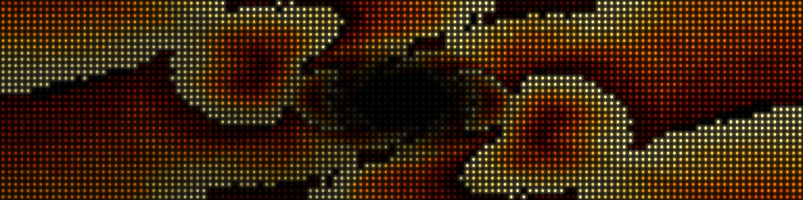
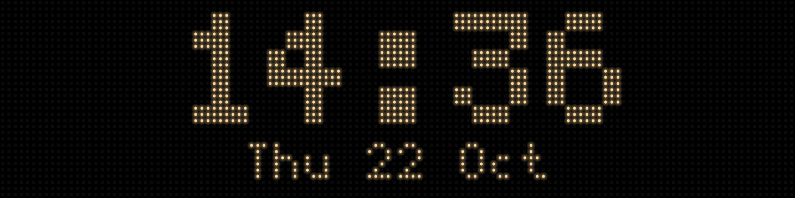
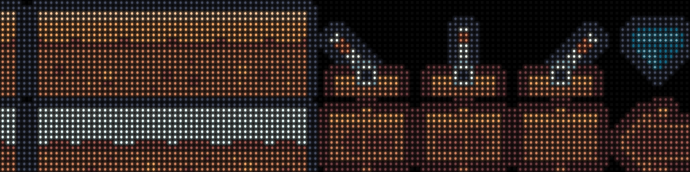

The simulator#
opendmd-sim plays a card, or any folder of GIFs, in a desktop window drawn
as the panel's LEDs: the same opendmd-core engine the firmware runs, with
a renderer that models the real P4 panel's dots and glow instead of flat
squares. It is a tool for developers (checking an effect, a transition or a
card without a board on the desk).
Most people want the web demo instead. It runs in any browser, with nothing to install, and plays a demo card on the same engine: opendmd.github.io/demo.

Run it from source#
You need a stable Rust toolchain and a desktop to open the window on. From a checkout:
make sim # a folder picker opens
make sim ARGS="/path/to/card" # a card: a folder with filelist.txt
make sim ARGS="/path/to/gifs" # any folder of GIFs, in name order
make sim ARGS="/path/to/one.gif" # a single GIF
make sim ARGS="--demo" # the built-in demo, no files needed
(cd opendmd-sim && cargo run --release -- <options> does the same.) With
no argument a folder picker opens, and the demo plays if you cancel it. A
folder or GIF dropped onto the program counts as the argument.
opendmd-sim --help lists every option: filters for a card (--platforms,
--title, --category), --shuffle, --scale (pixels per LED, default
10), --transition, --look (the panel's tints), --glow, and
--play '@clock?date=1' for a single live item or effect.
| Key | |
|---|---|
Space |
next GIF |
P |
pause / resume |
L |
LED or flat squares |
Esc |
quit |

The demo and the web demo's card use only OpenDMD's own effects and Kenney sprites (CC0).
Screenshots without a window#
--screenshot out.png renders one frame and exits, so it works on a
headless machine; --screenshot-at <ms> picks the moment, and
--screenshot-canvas out.png writes the raw 128x32 canvas. This is how the
pictures on this page were made:
make sim ARGS="--demo --screenshot demo.png --screenshot-at 500"
make sim ARGS="--play '@clock?style=big&date=1' --screenshot clock.png"

How the LEDs are drawn (their size, bloom and gamma) is modelled in
opendmd-render/src/lib.rs, measured from a close-up photo of the real panel.